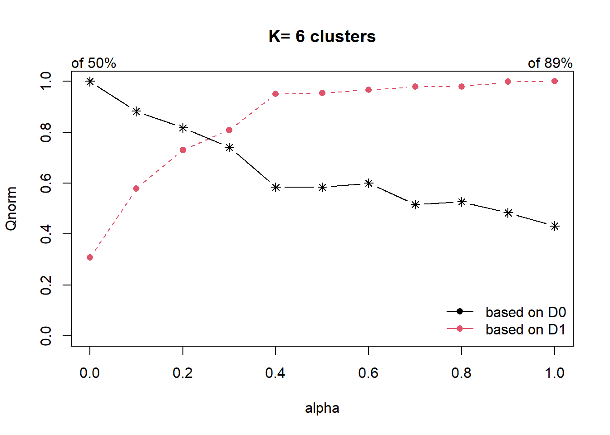

Show the code
pacman::p_load(rgdal, spdep, tmap, sf,
ggpubr, cluster, factoextra, NbClust,
heatmaply, corrplot, tidyverse,psych,
Hmisc,knitr,kableExtra,ClustGeo,ggiraphExtra)The process of creating regions is called regionalisation. A regionalisation is a special kind of clustering where the objective is to group observations which are similar in their statistical attributes, but also in their spatial location. In this sense, regionalization embeds the same logic as standard clustering techniques, but also applies a series of geographical constraints. Often, these constraints relate to connectivity: two candidates can only be grouped together in the same region if there exists a path from one member to another member that never leaves the region. These paths often model the spatial relationships in the data, such as contiguity or proximity. However, connectivity does not always need to hold for all regions, and in certain contexts it makes sense to relax connectivity or to impose different types of geographic constraints.
Firstly, we will install libraries below for data wrangling and geospatial analysis purposes.
pacman::p_load(rgdal, spdep, tmap, sf,
ggpubr, cluster, factoextra, NbClust,
heatmaply, corrplot, tidyverse,psych,
Hmisc,knitr,kableExtra,ClustGeo,ggiraphExtra)To import a shapefile object, st_read() function of sf package can be used as shown in the code chunk below.
nigeria_1 <- st_read(dsn = "geospatial",
layer = "geoBoundaries-NGA-ADM2",
crs = 4326)Reading layer `geoBoundaries-NGA-ADM2' from data source
`C:\Soe Htet\ISSS624\Take Home Exercise\Take Home Exercise 2\Geospatial'
using driver `ESRI Shapefile'
Simple feature collection with 774 features and 5 fields
Geometry type: MULTIPOLYGON
Dimension: XY
Bounding box: xmin: 2.668534 ymin: 4.273007 xmax: 14.67882 ymax: 13.89442
Geodetic CRS: WGS 84nigeria_1Simple feature collection with 774 features and 5 fields
Geometry type: MULTIPOLYGON
Dimension: XY
Bounding box: xmin: 2.668534 ymin: 4.273007 xmax: 14.67882 ymax: 13.89442
Geodetic CRS: WGS 84
First 10 features:
shapeName Level shapeID shapeGroup shapeType
1 Aba North ADM2 NGA-ADM2-72505758B79815894 NGA ADM2
2 Aba South ADM2 NGA-ADM2-72505758B67905963 NGA ADM2
3 Abadam ADM2 NGA-ADM2-72505758B57073987 NGA ADM2
4 Abaji ADM2 NGA-ADM2-72505758B61968000 NGA ADM2
5 Abak ADM2 NGA-ADM2-72505758B39432389 NGA ADM2
6 Abakaliki ADM2 NGA-ADM2-72505758B36739173 NGA ADM2
7 Abeokuta North ADM2 NGA-ADM2-72505758B86358915 NGA ADM2
8 Abeokuta South ADM2 NGA-ADM2-72505758B56925175 NGA ADM2
9 Abi ADM2 NGA-ADM2-72505758B1616690 NGA ADM2
10 Aboh-Mbaise ADM2 NGA-ADM2-72505758B78555816 NGA ADM2
geometry
1 MULTIPOLYGON (((7.401109 5....
2 MULTIPOLYGON (((7.334479 5....
3 MULTIPOLYGON (((13.83477 13...
4 MULTIPOLYGON (((7.045872 9....
5 MULTIPOLYGON (((7.811244 5....
6 MULTIPOLYGON (((8.4109 6.28...
7 MULTIPOLYGON (((3.143903 7....
8 MULTIPOLYGON (((3.301615 7....
9 MULTIPOLYGON (((8.153282 5....
10 MULTIPOLYGON (((7.321909 5....The imported file has WGS 84 coordinate system,774 rows and five columns including multipolygon geometry coordinates.
Shapename column of sf object will be analyzed to check if there are any duplicates.
duplicates <-nigeria_1[duplicated(nigeria_1$shapeName), ]
duplicatesSimple feature collection with 6 features and 5 fields
Geometry type: MULTIPOLYGON
Dimension: XY
Bounding box: xmin: 4.249275 ymin: 7.806164 xmax: 9.020704 ymax: 10.39507
Geodetic CRS: WGS 84
shapeName Level shapeID shapeGroup shapeType
95 Bassa ADM2 NGA-ADM2-72505758B52690633 NGA ADM2
305 Ifelodun ADM2 NGA-ADM2-72505758B18326272 NGA ADM2
356 Irepodun ADM2 NGA-ADM2-72505758B79178637 NGA ADM2
520 Nasarawa ADM2 NGA-ADM2-72505758B67188591 NGA ADM2
547 Obi ADM2 NGA-ADM2-72505758B3073896 NGA ADM2
694 Surulere ADM2 NGA-ADM2-72505758B31597260 NGA ADM2
geometry
95 MULTIPOLYGON (((8.823522 10...
305 MULTIPOLYGON (((4.721977 7....
356 MULTIPOLYGON (((4.543349 7....
520 MULTIPOLYGON (((7.493228 8....
547 MULTIPOLYGON (((9.008576 8....
694 MULTIPOLYGON (((4.375293 8....The above summary reveals that 6 secondary administrative areas appear more than once in the data. However, upon further checking, geometries of duplicate shape names are found to be different. Thus, they will not be deleted to prevent loss of information.
Nevertheless, as duplicated names can pose problems in subsequent analysis, we will rename the names as below.
nigeria_1[95,"shapeName"] <- "Bassa1"
nigeria_1[305,"shapeName"] <- "Ifelodun1"
nigeria_1[356,"shapeName"] <- "Irepodun1"
nigeria_1[520,"shapeName"] <- "Nasarawa1"
nigeria_1[547,"shapeName"] <- "Obi1"
nigeria_1[694,"shapeName"] <- "Surulere1"Now, the code below is added to ensure there is no more duplicate.
duplicates <-nigeria_1[duplicated(nigeria_1$shapeName), ]
duplicatesSimple feature collection with 0 features and 5 fields
Bounding box: xmin: NA ymin: NA xmax: NA ymax: NA
Geodetic CRS: WGS 84
[1] shapeName Level shapeID shapeGroup shapeType geometry
<0 rows> (or 0-length row.names)To import csv fiile, read.csv() function can be utilized. The data has been cleaned beforehand to filter the country to include Nigeria only. Otherwise, filter() function of dplyr can be used to exclude all the other countries.
nigeria_2 <- read.csv("Nigeria_Att.csv")Tibble dataframe is transformed to sf data table in code chunk below and the following columns are selected for clustering.
Water tech category - system used to transport the water from the source to collection point.
Is_urban - description of water point being at urban or rural area
Usage capacity - Recommended maximum users per water point
Clean_adm2 - names of secondary administrative areas
status_clean - Status of the water point (functional or non-functional)
Subjective quality - Perceived status of water including taste, appearance and odour
nigeria_2 <- st_as_sf(nigeria_2,
coords = c("lon_deg", "lat_deg"),
crs=4326)
nigeria_2 <- nigeria_2 %>%
select("X.water_tech_category","is_urban","usage_capacity",
"clean_adm2","status_clean","X.subjective_quality")
nigeria_2Simple feature collection with 95008 features and 6 fields
Geometry type: POINT
Dimension: XY
Bounding box: xmin: 2.707441 ymin: 4.301812 xmax: 14.21828 ymax: 13.86568
Geodetic CRS: WGS 84
First 10 features:
X.water_tech_category is_urban usage_capacity clean_adm2 status_clean
1 Tapstand TRUE 250 Moba
2 Mechanized Pump FALSE 1000 Obafemi-Owode Functional
3 Hand Pump FALSE 300 Ohaukwu
4 FALSE 300 Isi-Uzo
5 Hand Pump FALSE 300 Isi-Uzo
6 Hand Pump FALSE 300 Okpokwu
7 Hand Pump FALSE 300 Okpokwu
8 Mechanized Pump TRUE 1000 Gboko
9 Hand Pump FALSE 300 Bukuru
10 Hand Pump FALSE 300 Bukuru
X.subjective_quality geometry
1 POINT (5.12 7.98)
2 Acceptable quality POINT (3.597668 6.964532)
3 POINT (7.92972 6.48694)
4 POINT (7.64867 6.72757)
5 POINT (7.66485 6.7799)
6 POINT (7.77917 6.95556)
7 POINT (7.84167 7.01778)
8 POINT (8.985 7.3255)
9 POINT (9.11 7.171667)
10 POINT (9.216867 7.204867)Afterwards, describe() function of Hmisc package will be used to explore the selected variables in detail.
describe(nigeria_2$clean_adm2)nigeria_2$clean_adm2
n missing distinct
95008 0 753
lowest : Aba North Aba South Abaji Abak Abakaliki
highest: Zangon Kataf Zaria Zing Zurmi Zuru Missing values of water tech category column in the data are detected after using describe() function.
describe(nigeria_2$X.water_tech_category)nigeria_2$X.water_tech_category
n missing distinct
84953 10055 4
Value Hand Pump Mechanized Pump Rope and Bucket Tapstand
Frequency 58755 25644 1 553
Proportion 0.692 0.302 0.000 0.007In the code chunk below, missing values are replaced as unknown.
nigeria_2$X.water_tech_category[nigeria_2$X.water_tech_category==""]="Unknown"describe(nigeria_2$is_urban)nigeria_2$is_urban
n missing distinct
95008 0 2
Value FALSE TRUE
Frequency 75444 19564
Proportion 0.794 0.206describe(nigeria_2$usage_capacity)nigeria_2$usage_capacity
n missing distinct Info Mean Gmd
95008 0 4 0.601 488.6 276.5
Value 50 250 300 1000
Frequency 2 573 68789 25644
Proportion 0.000 0.006 0.724 0.270Status_clean column is also found to have missing values and they are recoded as “Unknown” accordingly.
describe(nigeria_2$status_clean)nigeria_2$status_clean
n missing distinct
84352 10656 8
lowest : Abandoned Abandoned/Decommissioned Functional Functional but needs repair Functional but not in use
highest: Functional but needs repair Functional but not in use Non-Functional Non-Functional due to dry season Non functional due to dry seasonnigeria_2$status_clean[nigeria_2$status_clean==""] = "Unknown"Similarly, subjective quality also has missing information and the same recoding process is performed.
describe(nigeria_2$X.subjective_quality)nigeria_2$X.subjective_quality
n missing distinct
84383 10625 6
lowest : Acceptable quality No because of Colour No because of Odour No because of Taste Within National limits (potable)
highest: No because of Colour No because of Odour No because of Taste Within National limits (potable) Within National standards (potable)nigeria_2$X.subjective_quality[nigeria_2$X.subjective_quality==""] = "Unknown"Select rows where transport system is hand pump and assign to “HandPump”.
HandPump <- nigeria_2 %>%
filter(X.water_tech_category == "Hand Pump")Select rows where water points are located at rural and urban areas.
Rural <- nigeria_2 %>%
filter(is_urban == "FALSE")
Urban <- nigeria_2 %>%
filter(is_urban == "TRUE")Select rows where maximum recommended users is less than 1000 and equal to or more than 1000.
U_Capacity_1 <- nigeria_2 %>%
filter(usage_capacity < 1000)
U_Capacity_2 <- nigeria_2 %>%
filter(usage_capacity >= 1000)Select rows where water points are inspected to be functional or non-functional.
functional <- nigeria_2 %>%
filter(status_clean %in% c("Functional",
"Functional but needs repair",
"Functional but not in use"))
Non_functional <- nigeria_2 %>%
filter(status_clean %in% c("Non-Functional",
"Non-Functional due to dry season",
"Non functional but not in use",
"Abandoned/Decommissioned",
"Abandoned"))
Unknown <- nigeria_2 %>%
filter(status_clean == "Unknown")Select rows where quality of water is drinkable or not suitable to drink.
Potable <- nigeria_2 %>%
filter(X.subjective_quality %in% c("Acceptable quality",
"Within National limits (Potable)",
"Within National standards (Potable)"))
Not_Potable <- nigeria_2 %>%
filter(X.subjective_quality %in% c("No because of Colour",
"No because of Odour",
"No because of Taste"))The following code chunk is used to calculate how many counts of variables calculated are present in each polygon. st_intersect() method is used to perform the calculation.
nigeria_1 <- nigeria_1 %>%
mutate(`total_wpt` = lengths(
st_intersects(nigeria_1, nigeria_2))) %>%
mutate(`HandPump` = lengths(
st_intersects(nigeria_1, HandPump))) nigeria_1 <- nigeria_1 %>%
mutate(`Rural` = lengths(
st_intersects(nigeria_1, Rural))) %>%
mutate(`Urban` = lengths(
st_intersects(nigeria_1, Urban))) nigeria_1 <- nigeria_1 %>%
mutate(`wpt_functional` = lengths(
st_intersects(nigeria_1, functional))) %>%
mutate(`wpt_non-functional` = lengths(
st_intersects(nigeria_1, Non_functional)))nigeria_1 <- nigeria_1 %>%
mutate(`U_Capacity_1` = lengths(
st_intersects(nigeria_1, U_Capacity_1))) %>%
mutate(`U_Capacity_2` = lengths(
st_intersects(nigeria_1, U_Capacity_2)))nigeria_1 <- nigeria_1 %>%
mutate(`Potable` = lengths(
st_intersects(nigeria_1, Potable))) %>%
mutate(`Not_Potable` = lengths(
st_intersects(nigeria_1, Not_Potable)))After the counts in polygon are done, we will proceed to compute the percentage figures in the code chunk below.
nigeria_1 <- nigeria_1 %>%
mutate(Pct_HandPump = (HandPump/total_wpt)*100) %>%
mutate(Pct_Rural = (Rural/total_wpt)*100) %>%
mutate(Pct_functional = (wpt_functional/total_wpt)*100) %>%
mutate(Pct_non_functional = (`wpt_non-functional`/total_wpt)*100) %>%
mutate(Pct_UC_1 = (U_Capacity_1/total_wpt)*100) %>%
mutate(Pct_UC_2 = (U_Capacity_2/total_wpt)*100) %>%
mutate(Pct_Potable = (Potable/total_wpt)*100) %>%
mutate(Pct_Not_Potable = (Not_Potable/total_wpt)*100)As the denominator for calculations is total_wpt (total water point), for some areas that do not have any water point (i.e the denominator is 0), the calculation will give rise to NaN value. To fix this issue, we will assign value 0 to percentage columns.
nigeria_1[nigeria_1$total_wpt==0,c(17:24)] <- 0The final clean data is saved as .rds file.
write_rds(nigeria_1, "nigeria_1.rds")To understand more about the data fields that we have just derived, the distributions of these fields are plotted by using ggplot2 package.
nigeria_1 <- read_rds("nigeria_1.rds")
g.hp <- ggplot(data=nigeria_1,
aes(x=`Pct_HandPump`)) +
geom_histogram(bins=20,
color="black",
fill="light blue")
g.rural <- ggplot(data=nigeria_1,
aes(x=`Pct_Rural`)) +
geom_histogram(bins=20,
color="black",
fill="light blue")
g.functional <- ggplot(data=nigeria_1,
aes(x=`Pct_functional`)) +
geom_histogram(bins=20,
color="black",
fill="light blue")
g.nonfunctional <- ggplot(data=nigeria_1,
aes(x=`Pct_non_functional`)) +
geom_histogram(bins=20,
color="black",
fill="light blue")
UC1 <- ggplot(data=nigeria_1,
aes(x=`Pct_UC_1`)) +
geom_histogram(bins=20,
color="black",
fill="light blue")
UC2 <- ggplot(data=nigeria_1,
aes(x=`Pct_UC_2`)) +
geom_histogram(bins=20,
color="black",
fill="light blue")
ggarrange(g.hp,g.rural,g.functional,g.nonfunctional,
UC1,UC2,nrow=3,ncol=2)Observations from distribution plos
As expected, the water points installed as mostly in rural areas where potable drinking water is not easily accessible.
Average percentage of functional water points is only close to 50%. That is alarming as it means half of water points installed in Nigeria might not be functioning properly.
Majority of water points can only serve less than 1000 people per point.
total_functional <- ggplot(data=nigeria_1,
aes(x=`wpt_functional`)) +
geom_histogram(bins=20,
color="black",
fill="light blue")
total_nonfunctional <- ggplot(data=nigeria_1,
aes(x=`wpt_non-functional`)) +
geom_histogram(bins=20,
color="black",
fill="light blue")
g.potable <- ggplot(data=nigeria_1,
aes(x=`Pct_Potable`)) +
geom_histogram(bins=20,
color="black",
fill="light blue")
g.n_potable <- ggplot(data=nigeria_1,
aes(x=`Pct_Not_Potable`)) +
geom_histogram(bins=20,
color="black",
fill="light blue")
ggarrange(total_functional,total_nonfunctional,
g.potable,g.n_potable,nrow=2,ncol=2)Observations from distribution plots
Distributions of both functional and non-functional water points are right skewed.
Majority of the water points inspected are perceived to have potable water.
p1 <- ggplot(data=nigeria_1,
aes(x=`Pct_functional`)) +
geom_boxplot(color="black",
fill="light blue")
p2 <- ggplot(data=nigeria_1,
aes(x=`Pct_non_functional`)) +
geom_boxplot(color="black",
fill="light blue")
ggarrange(p1,p2,nrow=1,ncol=2)Observations from boxplots
The data is converted to data frame object as cor() function can only work with data frame object.
nigeria <- data.frame(nigeria_1)The code chunk below produces a plot that shows correlations between cluster variables.
cluster_vars.cor = cor(nigeria[,c(11,12,17:24)])
corrplot.mixed(cluster_vars.cor,
lower = "ellipse",
upper = "number",
tl.pos = "lt",
diag = "l",
tl.col = "black",
number.cex = .7,tl.cex=0.8)
Pct_UC_1 is heavily correlated with Pct_UC_2 and Pct_HandPump. Therefore, it will be dropped from cluster variable list to avoid multicollinearity.
cluster.vars <- nigeria %>%
select(c(1,11,12,17:20,22:24))
head(cluster.vars) shapeName wpt_functional wpt_non.functional Pct_HandPump Pct_Rural
1 Aba North 7 9 11.764706 0.000000
2 Aba South 29 35 9.859155 5.633803
3 Abadam 0 0 0.000000 0.000000
4 Abaji 23 34 40.350877 84.210526
5 Abak 23 25 8.333333 83.333333
6 Abakaliki 82 42 43.776824 87.553648
Pct_functional Pct_non_functional Pct_UC_2 Pct_Potable Pct_Not_Potable
1 41.17647 52.94118 82.35294 76.47059 17.647059
2 40.84507 49.29577 87.32394 80.28169 9.859155
3 0.00000 0.00000 0.00000 0.00000 0.000000
4 40.35088 59.64912 59.64912 98.24561 1.754386
5 47.91667 52.08333 91.66667 72.91667 27.083333
6 35.19313 18.02575 9.44206 42.06009 11.158798row.names(cluster.vars) <- cluster.vars$shapeName
df <- cluster.vars %>%
select(c(2:10))
head(df) wpt_functional wpt_non.functional Pct_HandPump Pct_Rural
Aba North 7 9 11.764706 0.000000
Aba South 29 35 9.859155 5.633803
Abadam 0 0 0.000000 0.000000
Abaji 23 34 40.350877 84.210526
Abak 23 25 8.333333 83.333333
Abakaliki 82 42 43.776824 87.553648
Pct_functional Pct_non_functional Pct_UC_2 Pct_Potable
Aba North 41.17647 52.94118 82.35294 76.47059
Aba South 40.84507 49.29577 87.32394 80.28169
Abadam 0.00000 0.00000 0.00000 0.00000
Abaji 40.35088 59.64912 59.64912 98.24561
Abak 47.91667 52.08333 91.66667 72.91667
Abakaliki 35.19313 18.02575 9.44206 42.06009
Pct_Not_Potable
Aba North 17.647059
Aba South 9.859155
Abadam 0.000000
Abaji 1.754386
Abak 27.083333
Abakaliki 11.158798Cluster variables that have been selected are of different types. For example, wpt_functional represents total number of functional water points in the polygon region while Pct_HandPump represents percentage value of water points with hand pump specifically in the region. Therefore, it is wise to standardize the cluster variables to ensure equal importance is placed on each variable.
df_scaled <- scale(df)Proximity matrix is computed using euclidean distance. The method of distance calculation can be modified in input fields of dist() function.
proxmat <- dist(df_scaled, method = 'euclidean')Afterwards, ward algorithm is used to perform hierarchical clustering.
hclust_ward <- hclust(proxmat, method = 'ward.D')plot(hclust_ward, cex = 0.1)There are various algorithms that can be used in hierarchical clustering. Therefore, it might be sometimes confusing to choose which algorithm to employ. We can tackle this dilemma by using agnes() function. The output gives the level of homogeneity for each algorithm and higher value in the output corresponds to better homogeneity within the cluster.
m <- c( "average", "single", "complete", "ward")
names(m) <- c( "average", "single", "complete", "ward")
ac <- function(x) {
agnes(df_scaled, method = x)$ac
}
map_dbl(m, ac) average single complete ward
0.8730418 0.7815309 0.9382505 0.9840038 From the results, ward algorithm gives highest score of homogeneity. Therefore, it will be used for subsequent cluster analysis.
There are multiple methods to determine optimal cluster numbers. One of the most popular method is elbow method. fviz_nbclust() of factoextra package allows us to produce elbow method plot as shown below.
set.seed(123)
fviz_nbclust(df_scaled, hcut, method = "wss", k.max = 10) + theme_minimal() + ggtitle("the Elbow Method")There is no clear visible bend in the elbow plot. Therefore, it is ambiguous to decide the optimal number of clusters.
Gap statistics is a more sophisticated method to determine optimal number of clusters. fviz_nbclust() function of factoextra package can also be used by passing method argument as “gap_start”. The estimation of optimal clusters will be value that maximizes the gap statistics.
set.seed(123)
fviz_nbclust(df_scaled, hcut, nstart = 25, method = "gap_stat", nboot = 500)+
labs(subtitle = "Gap statistic method")Gap Statistics plot indicates that the optimal number of clusters is 10.
Another visualization that can help determine optimal clusters is called average silhouette method. It computes the average silhouette of observations for different values of k. The optimal number of clusters k is the one that maximizes the value of average silhouette over a range of possible values of k.
fviz_nbclust(df_scaled, hcut, method = "silhouette", k.max = 10) + theme_minimal() + ggtitle("The Silhouette Plot")Discussion
Elbow method does not provide a conclusive result and the plot result is ambiguous.
Gap statistics method proposes 10 as optimal number of clusters. However, it should be noted that 10 clusters for small data set might cause some clusters to have only one or two members.
Average silhouette method proposes 2 optimal number of clusters. 6 clusters is second most optimal.
From the summary, it can be observed that no two different methods provide same conclusive results. For this study, we will choose 6 clusters as it can give proper differentiation between clusters while keeping a decent number of members in each cluster.
groups <- as.factor(cutree(hclust_ward, k=6))nigeria_cluster <- cbind(nigeria_1, as.matrix(groups)) %>%
rename(`CLUSTER`=`as.matrix.groups.`)qtm(nigeria_cluster, "CLUSTER")Discussion
As hierarchical clustering does not consider spatial similarity, it is clear to see the clusters fragmented across the map.
For development policy or marketing or political campaigns, it is desirable that contiguous regions belong to the same clusters to enable an efficient and targeted approach. Therefore, the cluster analysis should be carried out by taking into account both attribute similarity and spatial similarity.
In this section, we will perform spatially constrained clustering using Skater method. Skater method utilizes minimum spanning tree algorithm from neighbors that are sharing borders to each other. The term “minimum spanning” comes from minimizing the cost (i.e dissimilarity between neighbors) when connecting to form a tree.
Since Skater method is based on minimum spanning tree algorithm that relies on contiguous neighbors, row 86 of geospatial data (the region with no neighbor) will be removed from the data.
nigeria_11 <- nigeria_1[-86,]The sf object will be converted to spatial polygons object to be able to work with skater method.
nigeria_sp <- as_Spatial(nigeria_11)The code chunk below computes contiguity neighbors by queen method using poly2nb() of spdep package.
nigeria_nb <- poly2nb(nigeria_sp)
nigeria_nbNeighbour list object:
Number of regions: 773
Number of nonzero links: 4440
Percentage nonzero weights: 0.7430602
Average number of links: 5.743855 As region 86 was removed due to lack of neighbor, the same region from aspatial data should be removed to keep same number of rows.
df_spatial <- df_scaled[-86,]Edge costs (pairwise dissimilarity between the neighbors) can be computed in the code chunk below using nbcosts() function of spdep package.
lcosts <- nbcosts(nigeria_nb, df_spatial)Next, we convert the neighbour list to a list weights object by specifying the just computed lcosts as the weights.
We will use nb2listw() function of spdep package to achieve this and we specify the style as B to make sure the cost values are not row-standardised.
nigeria.wm <- nb2listw(nigeria_nb,
lcosts,
style="B")
summary(nigeria.wm)Characteristics of weights list object:
Neighbour list object:
Number of regions: 773
Number of nonzero links: 4440
Percentage nonzero weights: 0.7430602
Average number of links: 5.743855
Link number distribution:
1 2 3 4 5 6 7 8 9 10 11 12 14
2 14 57 125 182 140 122 72 41 12 4 1 1
2 least connected regions:
138 560 with 1 link
1 most connected region:
508 with 14 links
Weights style: B
Weights constants summary:
n nn S0 S1 S2
B 773 597529 11463.8 75587.35 844575Minimum spanning tree algorithm is performed using mstree() function of spdep package.
nigeria.mst <- mstree(nigeria.wm)class(nigeria.mst)[1] "mst" "matrix"head(nigeria.mst) [,1] [,2] [,3]
[1,] 415 466 0.6301510
[2,] 466 63 0.9064619
[3,] 63 764 0.7126842
[4,] 764 771 0.7647541
[5,] 63 89 0.9120423
[6,] 415 236 1.1537329The final minimum spanning tree structure is displayed.
plot(nigeria_sp, border=gray(.5))
plot.mst(nigeria.mst,
coordinates(nigeria_sp),
col="blue",
cex.lab=0.2,
cex.circles=0.005,
add=TRUE)The code chunk below compute the spatially constrained cluster using skater() of spdep package. The skater() takes three mandatory arguments: - the first two columns of the MST matrix (i.e. not the cost), - the data matrix (to update the costs as units are being grouped), and - the number of cuts. Note: It is set to one less than the number of clusters. So, the value specified is not the number of clusters, but the number of cuts in the graph, one less than the number of clusters.
clust6 <- spdep::skater(edges = nigeria.mst[,1:2],
data = df_spatial,
method = "euclidean",
ncuts = 5)We can extract the number of members using the code below.
ccs6 <- clust6$groups
table(ccs6)ccs6
1 2 3 4 5 6
293 178 19 148 59 76 It is observed that there is a decent amount of members in each cluster with lowest being 59.
Lastly, we can also plot the pruned tree that shows the six clusters on top of the nigeria map.
plot(nigeria_sp, border=gray(.5))
plot(clust6,
coordinates(nigeria_sp),
cex.lab=.2,
groups.colors=c("red","green","blue", "brown", "pink",
"yellow"),
cex.circles=0.005,
add=TRUE)As we now have newly derived spatially restrained clusters, we can visualize the clusters on the map by using the code chunks below.
groups_mat <- as.matrix(clust6$groups)nigeria_sf_spatialcluster <- cbind(nigeria_11, as.factor(groups_mat)) %>%
rename(`SP_CLUSTER`=`as.factor.groups_mat.`)qtm(nigeria_sf_spatialcluster, "SP_CLUSTER")Discussion
Unlike hierarchical clustering with no spatial restraint, skater method delivers organized clustering that respects contiguity of neighbors.
Cluster 1 and 2 cover the majority of the map and cluster 3,4,5 and 6 make up the rest.
Firstly, mean values of cluster variables can be a good indicator of variations between clusters. The code chunk below will be used to get a summary table with mean values.
as.data.frame(df_spatial) %>%
mutate(Cluster = nigeria_sf_spatialcluster$SP_CLUSTER) %>%
group_by(Cluster) %>%
summarise_all("mean") %>%
kable() %>%
kable_styling()| Cluster | wpt_functional | wpt_non.functional | Pct_HandPump | Pct_Rural | Pct_functional | Pct_non_functional | Pct_UC_2 | Pct_Potable | Pct_Not_Potable |
|---|---|---|---|---|---|---|---|---|---|
| 1 | -0.0161468 | 0.4701286 | 0.3365632 | 0.1865996 | -0.0783147 | 0.3176562 | -0.2368948 | 0.1861788 | -0.0025658 |
| 2 | 0.9227470 | 0.0055403 | 0.9642621 | 0.2792070 | 1.0637543 | -0.5763830 | -0.6235108 | 0.7320954 | -0.3106483 |
| 3 | -0.8315384 | -1.1207785 | -0.6068319 | -1.8290009 | -2.0588591 | -1.7093683 | -1.0127278 | -2.7297851 | -0.9022539 |
| 4 | -0.5725469 | -0.4513865 | -0.9209978 | -0.1194801 | -0.6034055 | 0.1135603 | 0.5797276 | -0.6661955 | 0.2926982 |
| 5 | -0.6258608 | -0.5511638 | -0.9526517 | 0.2284166 | -0.3116905 | 0.9243149 | 1.3637043 | -0.1738042 | 0.9729882 |
| 6 | -0.2792691 | -0.2236107 | -0.8515332 | -0.8314089 | -0.2306729 | -0.3635687 | 0.4560961 | -0.2817932 | -0.3504395 |
When there are many cluster variables, it is not easy to distinguish the clusters. Therefore, we will explore other visualization methods to analyze the cluster results.
Firstly, the cluster column will be appended to data frame by using cbind().
cluster_pos <- as.data.frame(nigeria_sf_spatialcluster$SP_CLUSTER) %>% rownames_to_column()
colnames(cluster_pos) <- c("rowname", "cluster")
final <- cbind(df_spatial,cluster_pos)We will proceed to analyze the distributions of clusters by using box plot from ggplot2 package as shown below.
final_og <- cbind(nigeria_11,cluster_pos)
ggplot(final_og, aes(x = cluster, y = wpt_functional)) +
geom_boxplot(aes(fill = cluster))ggplot(final_og, aes(x = cluster, y = wpt_non.functional)) +
geom_boxplot(aes(fill = cluster))ggplot(final_og, aes(x = cluster, y = Pct_functional)) +
geom_boxplot(aes(fill = cluster))ggplot(final_og, aes(x = cluster, y = Pct_non_functional)) +
geom_boxplot(aes(fill = cluster))ggplot(final_og, aes(x = cluster, y = Pct_Potable)) +
geom_boxplot(aes(fill = cluster))ggplot(final_og, aes(x = cluster, y = Pct_Not_Potable)) +
geom_boxplot(aes(fill = cluster))ggplot(final_og, aes(x = cluster, y = Pct_HandPump)) +
geom_boxplot(aes(fill = cluster))ggplot(final_og, aes(x = cluster, y = Pct_Rural)) +
geom_boxplot(aes(fill = cluster))ggplot(final_og, aes(x = cluster, y = Pct_UC_2)) +
geom_boxplot(aes(fill = cluster))There is also another powerful visualization technique using ggRadar(). The code chunk below demonstrates how to produce a radar plot that displays the attributes of clusters. ggRadar() of ggiraphExtra package can be used to perform the task.
ggRadar(final, aes(group = cluster),
rescale = FALSE, legend.position = "none", size = 1, interactive = FALSE, use.label = TRUE) +
facet_wrap(~cluster) +
scale_y_discrete(breaks = NULL) + # don't show ticks
theme(axis.text.x = element_text(size = 4.5)) + scale_fill_manual(values = rep ("#1c6193", nrow(final))) +
scale_color_manual(values = rep("#1c6193", nrow(final))) +
ggtitle("Cluster Attributes")Interpretation of Clusters
Cluster 1 displays above average attributes in pct_non_functional and wpt_non_functional fields. Given that it is the biggest cluster, more efforts should be directed to repair and upkeep the water points installed in cluster 1.
Cluster 2 has high percentage of potable and functional water point as well as high total number of functional water points. Below average Pct_UC_2 indicates that most of the water points can serve only 300 or 500 maximum users at each water point. It is also observed that hand pump is mostly used to transport water in cluster 2 regions.
Cluster 3 which belongs to one of the poorest states in Nigeria, Borno, results in lowest attributes in almost all the variables. Having low values in both pct_functional and pct_non_functional indicates that the status of majority of water points in cluster 3 is unknown. Attention is needed to also verify the status and quality of water should be assessed as currently, almost none is potable as observed from the radar chart. Locations of water points are not effective as many of them are not installed in rural areas where potable water is needed.
Cluster 4 belongs to the regions with many water points that can serve 1000 people. Nonetheless, many water points are either not functioning or quality of water is not up to standard.
Cluster 5 has the highest percentage of water points that have 1000 user capacity. But alarmingly high number of water points are non-functional and non-potable. Most of these are installed in rural areas. Therefore, repair and periodic checks are required to improve cluster 5.
Cluster 6 also has above average water points with 1000 maximum users. Not many of them are installed in rural areas which might be due to the fact that cluster 6 regions are slightly more developed compared to other regions.
Before we can performed spatially constrained hierarchical clustering, a spatial distance matrix will be derived by using st_distance() of sf package.
dist <- st_distance(nigeria_1, nigeria_1)
distmat <- as.dist(dist)Next, choicealpha() will be used to determine a suitable value for the mixing parameter alpha as shown in the code chunk below.
cr <- choicealpha(proxmat, distmat, range.alpha = seq(0, 1, 0.1), K=6, graph = TRUE)
With reference to the graphs above, alpha = 0.3 will be used as shown in the code chunk below.
clustG <- hclustgeo(proxmat, distmat, alpha = 0.3)groups <- as.factor(cutree(clustG, k=6))We will then join back the group list with nigeria polygon feature data frame by using the code chunk below.
nigeria_sf_Gcluster <- cbind(nigeria_1, as.matrix(groups)) %>%
rename(`CLUSTER` = `as.matrix.groups.`)We can now plot the map of the newly delineated spatially constrained clusters.
qtm(nigeria_sf_Gcluster, "CLUSTER")Discussion
Clusters are more fragmented in ClustGeo method.
The results might be due to alpha value of 0.3 which indicates that attribute similarity takes precedence in the cluster analysis.
ClustGeo method might be more useful for analysis where it is not required to strictly follow geographical contiguity of cluster members and attribute similarity is more desired.
CLUSTER_CG <- as.data.frame(nigeria_sf_Gcluster$CLUSTER) %>%
rownames_to_column()
colnames(CLUSTER_CG) <- c("rowname","CLUSTER")
final_CG <- cbind(df_scaled,CLUSTER_CG)ggRadar(final_CG, aes(group = CLUSTER),
rescale = FALSE, legend.position = "none", size = 1, interactive = FALSE, use.label = TRUE) +
facet_wrap(~CLUSTER) +
scale_y_discrete(breaks = NULL) + # don't show ticks
theme(axis.text.x = element_text(size = 4.5)) + scale_fill_manual(values = rep ("#1c6193", nrow(final_CG))) +
scale_color_manual(values = rep("#1c6193", nrow(final_CG))) +
ggtitle("Cluster Attributes")Interpretation of Clusters
Cluster 1 which includes Nigeria’s largest city, Lagos, is an all rounder and does not exhibit any pronounced high or low in variables measured.
Cluster 2 is low in both functional and non-functional water points percentages. That implies status of water points in those regions is mostly unknown. Considering that Cluster 2 falls in Borno State which is one of the poorest in the nation, it is surprising to see lack of proper water facilities to produce potable water for those in need.
Cluster 3 has highest concentration of non-functional water points (%) and non-potable water (%) in the country. Cluster 3 which encompasses more developed regions in the country also has highest percentage of water points that can serve maximum of 1000 users each.
Cluster 4 also has high values in non-functional water points (%) and non-potable water (%) which however are not as high as cluster 3. It is observed that hand pump is mostly used for water points in cluster 4.
Cluster 5 also has high percentage of non functional water points but water quality in most functional units are perceived to be acceptable.
Cluster 6 which covers mostly rural areas has highest percentage of fully functional water points, potable water and water points with hand pump.
plot1 <- qtm(nigeria_sf_spatialcluster, "SP_CLUSTER") +
tm_layout(main.title="Skater Method",
main.title.size = 1,
main.title.position = "centre",
legend.height=0.25,
legend.width=0.35)
plot2 <- qtm(nigeria_sf_Gcluster, "CLUSTER") +
tm_layout(main.title="ClustGeo Method",
main.title.size = 1,
main.title.position = "centre",
legend.height=0.25,
legend.width=0.35)
tmap_arrange(plot1, plot2, asp=1, ncol=2)